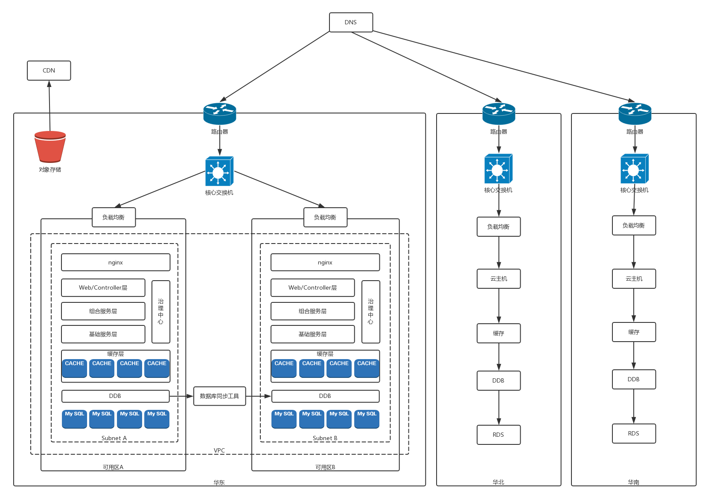
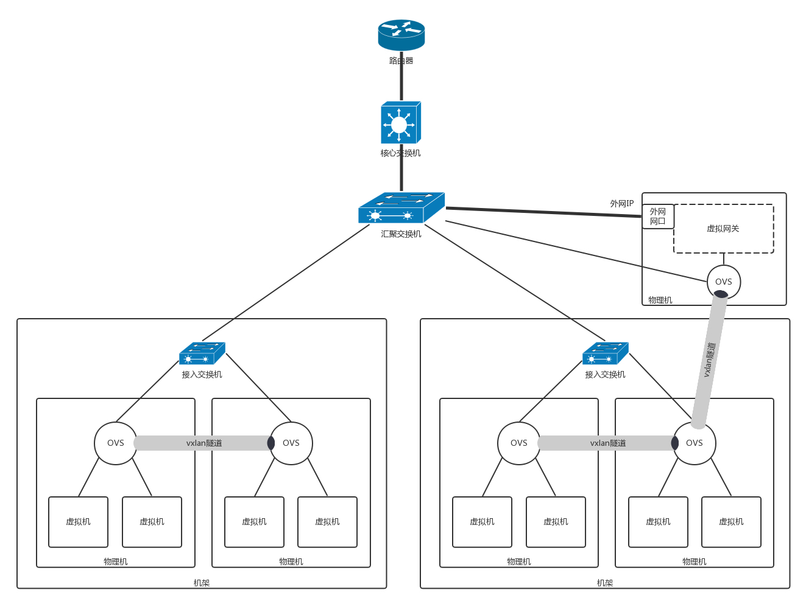
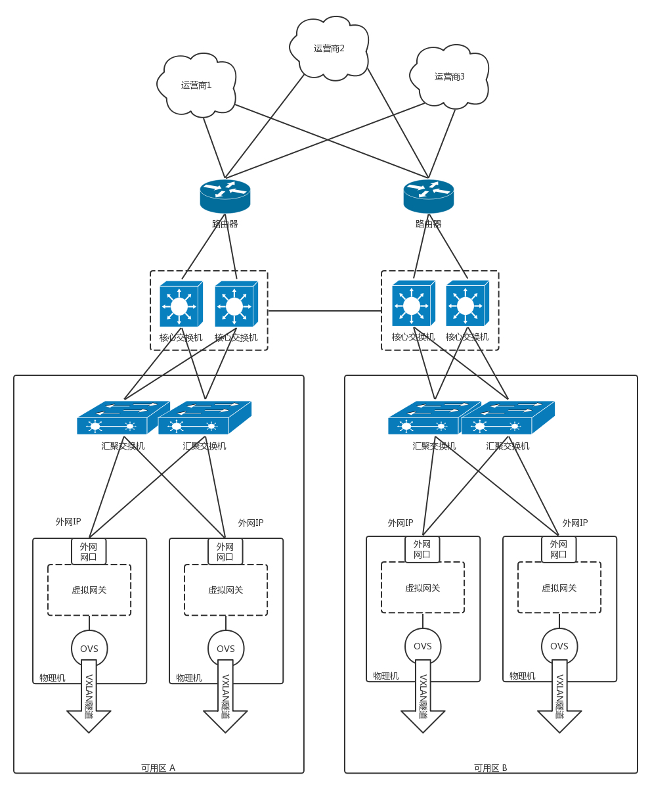
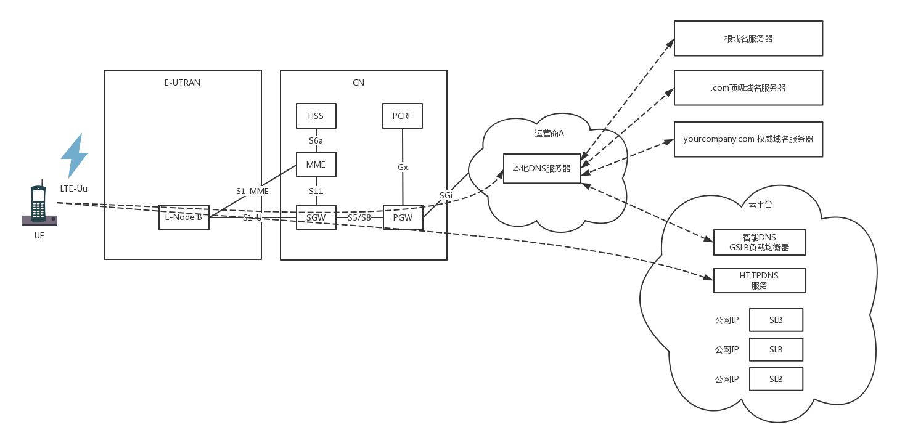

- 00 开篇词 想成为技术牛人？先搞定网络协议！.md
- 01 为什么要学习网络协议？.md
- 02 网络分层的真实含义是什么？.md
- 03 ifconfig：最熟悉又陌生的命令行.md
- 04 DHCP与PXE：IP是怎么来的，又是怎么没的？.md
- 05 从物理层到MAC层：如何在宿舍里自己组网玩联机游戏？.md
- 06 交换机与VLAN：办公室太复杂，我要回学校.md
- 07 ICMP与ping：投石问路的侦察兵.md
- 08 世界这么大，我想出网关：欧洲十国游与玄奘西行.md
- 09 路由协议：西出网关无故人，敢问路在何方.md
- 10 UDP协议：因性善而简单，难免碰到“城会玩”.md
- 11 TCP协议（上）：因性恶而复杂，先恶后善反轻松.md
- 12 TCP协议（下）：西行必定多妖孽，恒心智慧消磨难.md
- 13 套接字Socket：Talk is cheap, show me the code.md
- 14 HTTP协议：看个新闻原来这么麻烦.md
- 15 HTTPS协议：点外卖的过程原来这么复杂.md
- 16 流媒体协议：如何在直播里看到美女帅哥？.md
- 17 P2P协议：我下小电影，99%急死你.md
- 18 DNS协议：网络世界的地址簿.md
- 19 HttpDNS：网络世界的地址簿也会指错路.md
- 20 CDN：你去小卖部取过快递么？.md
- 21 数据中心：我是开发商，自己拿地盖别墅.md
- 22 VPN：朝中有人好做官.md
- 23 移动网络：去巴塞罗那，手机也上不了脸书.md
- 24 云中网络：自己拿地成本高，购买公寓更灵活.md
- 25 软件定义网络：共享基础设施的小区物业管理办法.md
- 26 云中的网络安全：虽然不是土豪，也需要基本安全和保障.md
- 27 云中的网络QoS：邻居疯狂下电影，我该怎么办？.md
- 28 云中网络的隔离GRE、VXLAN：虽然住一个小区，也要保护隐私.md
- 29 容器网络：来去自由的日子，不买公寓去合租.md
- 30 容器网络之Flannel：每人一亩三分地.md
- 31 容器网络之Calico：为高效说出善意的谎言.md
- 32 RPC协议综述：远在天边，近在眼前.md
- 33 基于XML的SOAP协议：不要说NBA，请说美国职业篮球联赛.md
- 34 基于JSON的RESTful接口协议：我不关心过程，请给我结果.md
- 35 二进制类RPC协议：还是叫NBA吧，总说全称多费劲.md
- 36 跨语言类RPC协议：交流之前，双方先来个专业术语表.md
- 37 知识串：用双十一的故事串起碎片的网络协议（上）.md
- 38 知识串：用双十一的故事串起碎片的网络协议（中）.md
- 39 知识串：用双十一的故事串起碎片的网络协议（下）.md
- 40 搭建一个网络实验环境：授人以鱼不如授人以渔.md
- 加餐1 创作故事：我是如何创作“趣谈网络协议”专栏的？.md
- 协议专栏特别福利 答疑解惑1期.md
- 协议专栏特别福利 答疑解惑2期.md
- 协议专栏特别福利 答疑解惑3期.md
- 协议专栏特别福利 答疑解惑4期.md
- 协议专栏特别福利 答疑解惑5期.md
- 结束语 放弃完美主义，执行力就是限时限量认真完成.md
37 知识串：用双十一的故事串起碎片的网络协议（上）
基本的网络知识我们都讲完了，还记得最初举的那个“双十一”下单的例子吗？这一节开始，我们详细地讲解这个过程，用这个过程串起我们讲过的网络协议。
我把这个过程分为十个阶段，从云平台中搭建一个电商开始，到BGP路由广播，再到DNS域名解析，从客户看商品图片，到最终下单的整个过程，每一步我都会详细讲解。这节我们先来看前三个阶段。
1.部署一个高可用高并发的电商平台
首先，咱们要有个电商平台。假设我们已经有了一个特别大的电商平台，这个平台应该部署在哪里呢？假设我们用公有云，一般公有云会有多个位置，比如在华东、华北、华南都有。毕竟咱们的电商是要服务全国的，当然到处都要部署了。我们把主站点放在华东。

为了每个点都能“雨露均沾”，也为了高可用性，往往需要有多个机房，形成多个可用区（Available Zone）。由于咱们的应用是分布在两个可用区的，所以假如任何一个可用区挂了，都不会受影响。
我们来回想[数据中心]那一节，每个可用区里有一片一片的机柜，每个机柜上有一排一排的服务器，每个机柜都有一个接入交换机，有一个汇聚交换机将多个机柜连在一起。
这些服务器里面部署的都是计算节点，每台上面都有Open vSwitch创建的虚拟交换机，将来在这台机器上创建的虚拟机，都会连到Open vSwitch上。

接下来，你在云计算的界面上创建一个VPC（Virtual Private Cloud，虚拟私有网络），指定一个IP段，这样以后你部署的所有应用都会在这个虚拟网络里，使用你分配的这个IP段。为了不同的VPC相互隔离，每个VPC都会被分配一个VXLAN的ID。尽管不同用户的虚拟机有可能在同一个物理机上，但是不同的VPC二层压根儿是不通的。
由于有两个可用区，在这个VPC里面，要为每一个可用区分配一个Subnet，也就是在大的网段里分配两个小的网段。当两个可用区里面网段不同的时候，就可以配置路由策略，访问另外一个可用区，走某一条路由了。
接下来，应该创建数据库持久化层。大部分云平台都会提供PaaS服务，也就是说，不需要你自己搭建数据库，而是采用直接提供数据库的服务，并且单机房的主备切换都是默认做好的，数据库也是部署在虚拟机里面的，只不过从界面上，你看不到数据库所在的虚拟机而已。
云平台会给每个Subnet的数据库实例分配一个域名。创建数据库实例的时候，需要你指定可用区和Subnet，这样创建出来的数据库实例可以通过这个Subnet的私网IP进行访问。
为了分库分表实现高并发的读写，在创建的多个数据库实例之上，会创建一个分布式数据库的实例，也需要指定可用区和Subnet，还会为分布式数据库分配一个私网IP和域名。
对于数据库这种高可用性比较高的，需要进行跨机房高可用，因而两个可用区都要部署一套，但是只有一个是主，另外一个是备，云平台往往会提供数据库同步工具，将应用写入主的数据同步给备数据库集群。
接下来是创建缓存集群。云平台也会提供PaaS服务，也需要每个可用区和Subnet创建一套，缓存的数据在内存中，由于读写性能要求高，一般不要求跨可用区读写。
再往上层就是部署咱们自己写的程序了。基础服务层、组合服务层、Controller层，以及Nginx层、API网关等等，这些都是部署在虚拟机里面的。它们之间通过RPC相互调用，需要到注册中心进行注册。
它们之间的网络通信是虚拟机和虚拟机之间的。如果是同一台物理机，则那台物理机上的OVS就能转发过去；如果是不同的物理机，这台物理机的OVS和另一台物理机的OVS中间有一个VXLAN的隧道，将请求转发过去。
再往外就是负载均衡了，负载均衡也是云平台提供的PaaS服务，也是属于某个VPC的，部署在虚拟机里面的，但是负载均衡有个外网的IP，这个外网的IP地址就是在网关节点的外网网口上的。在网关节点上，会有NAT规则，将外网IP地址转换为VPC里面的私网IP地址，通过这些私网IP地址访问到虚拟机上的负载均衡节点，然后通过负载均衡节点转发到API网关的节点。
网关节点的外网网口是带公网IP地址的，里面有一个虚拟网关转发模块，还会有一个OVS，将私网IP地址放到VXLAN隧道里面，转发到虚拟机上，从而实现外网和虚拟机网络之间的互通。
不同的可用区之间，通过核心交换机连在一起，核心交换机之外是边界路由器。
在华北、华东、华南同样也部署了一整套，每个地区都创建了VPC，这就需要有一种机制将VPC连接到一起。云平台一般会提供硬件的VPC互连的方式，当然也可以使用软件互连的方式，也就是使用VPN网关，通过IPsec VPN将不同地区的不同VPC通过VPN连接起来。
对于不同地区和不同运营商的用户，我们希望他能够就近访问到网站，而且当一个点出了故障之后，我们希望能够在不同的地区之间切换，这就需要有智能DNS，这个也是云平台提供的。
对于一些静态资源，可以保持在对象存储里面，通过CDN下发到边缘节点，这样客户端就能尽快加载出来。
2.大声告诉全世界，可以到我这里买东西
当电商应用搭建完毕之后，接下来需要将如何访问到这个电商网站广播给全网。
刚才那张图画的是一个可用区的情况，对于多个可用区的情况，我们可以隐去计算节点的情况，将外网访问区域放大。

外网IP是放在虚拟网关的外网网口上的，这个IP如何让全世界知道呢？当然是通过BGP路由协议了。
每个可用区都有自己的汇聚交换机，如果机器数目比较多，可以直接用核心交换机，每个Region也有自己的核心交换区域。
在核心交换外面是安全设备，然后就是边界路由器。边界路由器会和多个运营商连接，从而每个运营商都能够访问到这个网站。边界路由器可以通过BGP协议，将自己数据中心里面的外网IP向外广播，也就是告诉全世界，如果要访问这些外网IP，都来我这里。
每个运营商也有很多的路由器、很多的点，于是就可以将如何到达这些IP地址的路由信息，广播到全国乃至全世界。
3.打开手机来上网，域名解析得地址
这个时候，不但你的这个网站的IP地址全世界都知道了，你打的广告可能大家也都看到了，于是有客户下载App来买东西了。

客户的手机开机以后，在附近寻找基站eNodeB，发送请求，申请上网。基站将请求发给MME，MME对手机进行认证和鉴权，还会请求HSS看有没有钱，看看是在哪里上网。
当MME通过了手机的认证之后，开始建立隧道，建设的数据通路分两段路，其实是两个隧道。一段是从eNodeB到SGW，第二段是从SGW到PGW，在PGW之外，就是互联网。
PGW会为手机分配一个IP地址，手机上网都是带着这个IP地址的。
当在手机上面打开一个App的时候，首先要做的事情就是解析这个网站的域名。
在手机运营商所在的互联网区域里，有一个本地的DNS，手机会向这个DNS请求解析DNS。当这个DNS本地有缓存，则直接返回；如果没有缓存，本地DNS才需要递归地从根DNS服务器，查到.com的顶级域名服务器，最终查到权威DNS服务器。
如果你使用云平台的时候，配置了智能DNS和全局负载均衡，在权威DNS服务中，一般是通过配置CNAME的方式，我们可以起一个别名，例如 vip.yourcomany.com ，然后告诉本地DNS服务器，让它请求GSLB解析这个域名，GSLB就可以在解析这个域名的过程中，通过自己的策略实现负载均衡。
GSLB通过查看请求它的本地DNS服务器所在的运营商和地址，就知道用户所在的运营商和地址，然后将距离用户位置比较近的Region里面，三个负载均衡SLB的公网IP地址，返回给本地DNS服务器。本地DNS解析器将结果缓存后，返回给客户端。
对于手机App来说，可以绕过刚才的传统DNS解析机制，直接只要HTTPDNS服务，通过直接调用HTTPDNS服务器，得到这三个SLB的公网IP地址。
看，经过了如此复杂的过程，咱们的万里长征还没迈出第一步，刚刚得到IP地址，包还没发呢？话说手机App拿到了公网IP地址，接下来应该做什么呢？
欢迎你留言和我讨论。趣谈网络协议，我们下期见！
© 2019 - 2023 Liangliang Lee. Powered by Vert.x and hexo-theme-book.